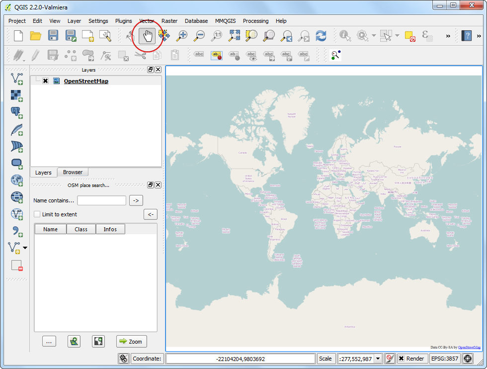
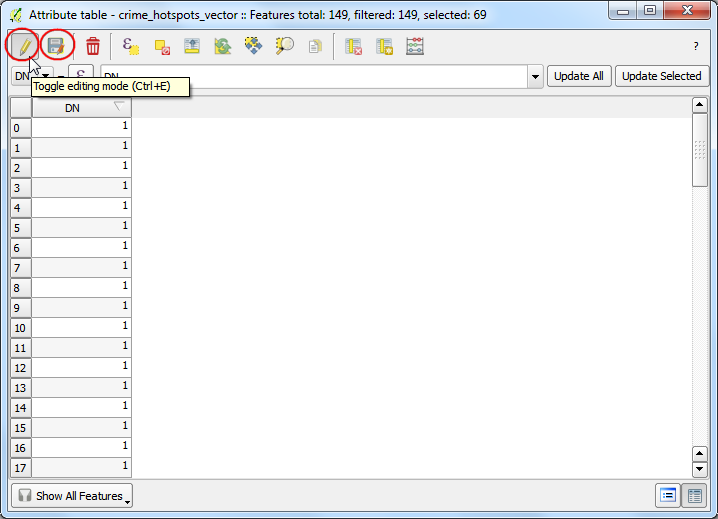
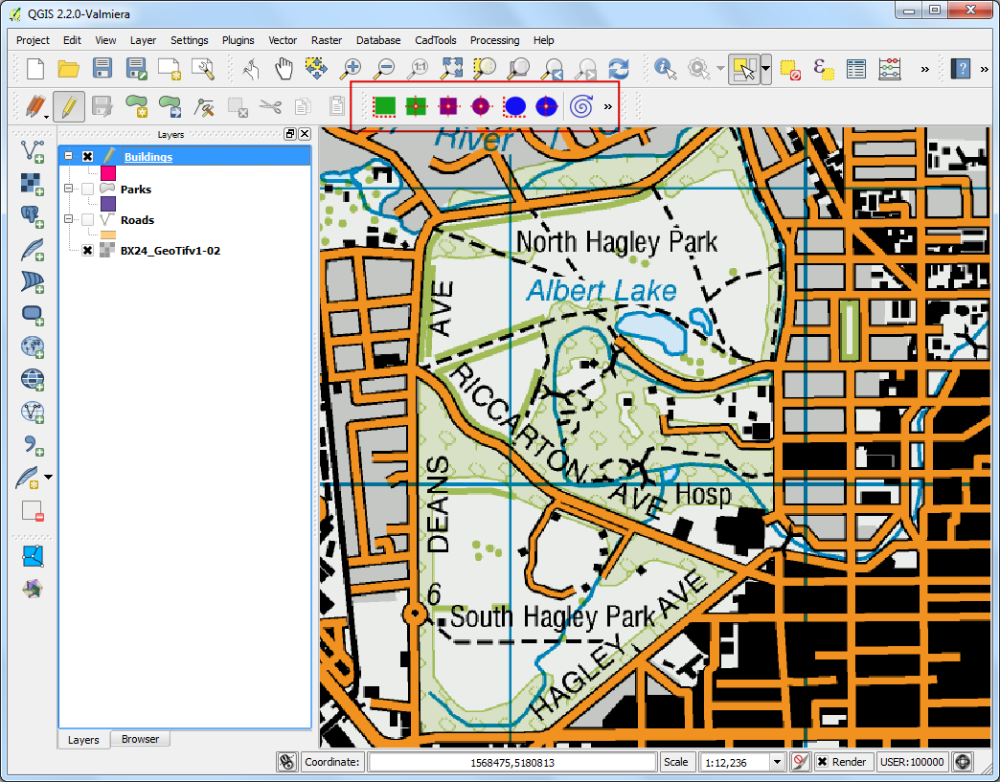
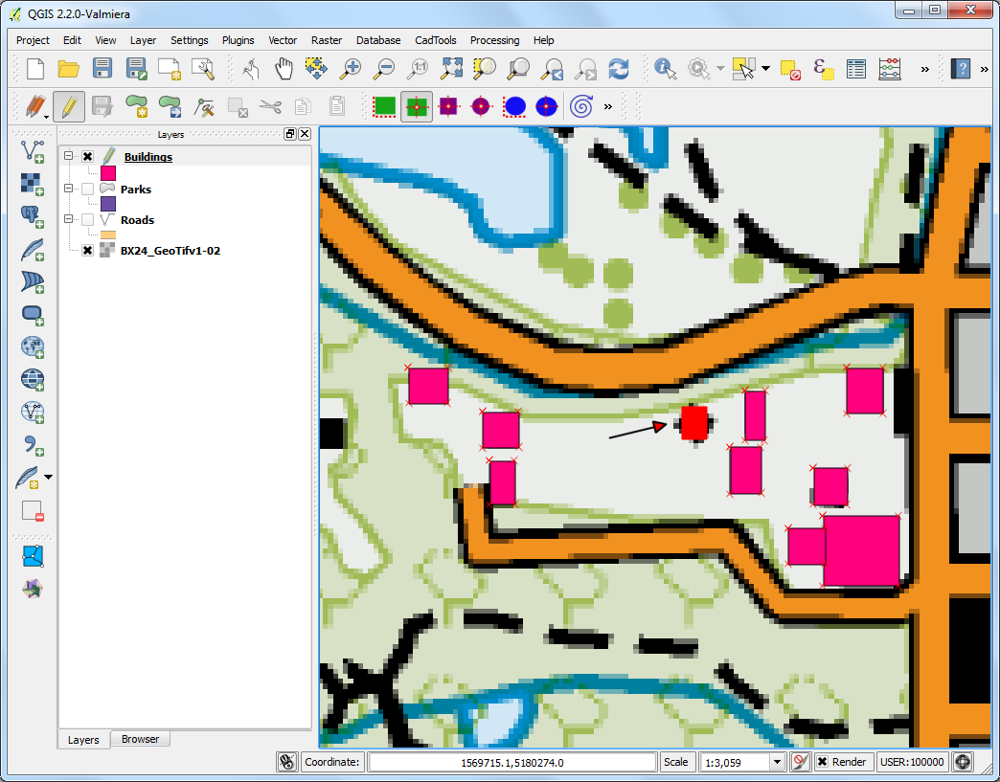
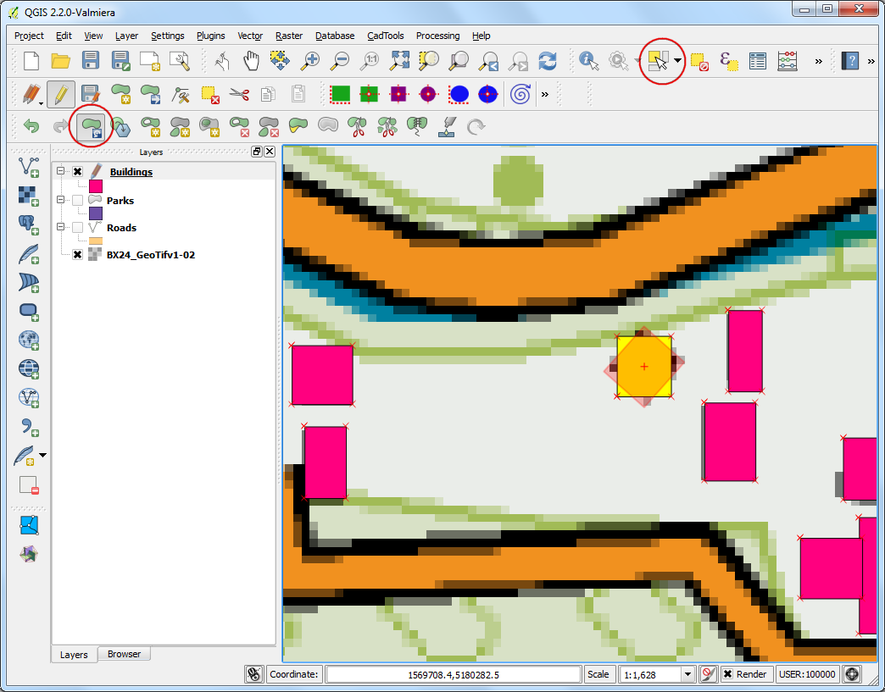

Ψηφιοποίηση Δεδομένων Χάρτη
[ Download PDF A4 Letter ]
Η ψηφιοποίηση είναι μια από τις πιο σημαντικές εργασίες που έχει να κάνει ένας ειδικός GIS. Συχνά ένα μεγάλο μέρος GIS χρόνου ξοδεύεται στη ψηφιοποίηση δεδομένων πλέγματος για να δημιουργηθούν διανυσματικά επίπεδα που χρησιμοποιούνται στην ανάλυση. Το QGIS έχει ισχυρές δυνατότητες ψηφιοποίησης και επεξεργασίας στην οθόνη, τις οποίες και θα εξερευνήσουμε σε αυτό το tutorial.
Επισκόπηση εργασίας
Θα χρησιμοποιήσουμε ένα τοπογραφικό χάρτη δεδομένων πλέγματος και θα δημιουργήσουμε διανυσματικά επίπεδα που θα αναπαριστούν χαρακτηριστικά γύρω από ένα πάρκο.
Άλλες δεξιότητες που θα μάθετε
Διαδικασία
Πηγαίνετε στο . Εντοπίστε το αρχείο που κατεβάσατε BX24_GeoTifv1-02.tif και πατήστε Open.

Αυτό είναι ένα μεγάλο αρχείο δεδομένων πλέγματος και μπορεί να παρατηρήσετε ότι όταν κάνετε μεγένθυνση ή μετακινείστε γύρω στο χάρτη, ο χάρτης θέλει λίγο χρόνο για να επεξεργαστεί την εικόνα.

Επιλέξτε την καρτέλα Pyramids. Κρατήστε πατημένο το Ctrl και επιλέξτε όλες τις αναλύσεις που υπάρχουν στον πίνακα Resolutions. Αφήστε τις υπόλοιπες επιλογές όπως είναι και πατήστε Build pyramids. Μόλις τελείωσει η διαδικασία πατήστε OK.

Πίσω στο κύριο παράθυρο του QGIS, χρησιμοποιήστε το εργαλείο Zoom για να εντοπίσετε την περιοχή Hagley Park στο Christchurch. Αυτό είναι το πάρκο που θα ψηφιοποιήσουμε.

Πριν ξεκινήσουμε, πρέπει να θέσουμε προεπιλογή Digitizing Options. Πηγαίνετε .

Επιλέξτε την καρτέλα Digitizing στο παράθυρο διαλόγου Options. Ορίστε το Default snap mode σε To vertex and segment. Αυτό σας επιτρέπει να κάνετε εναλλαγές στη πλησιέστερη κορυφή ή ευθύγραμμο τμήμα. Επίσης προτιμώ να θέτω το Default snapping tolerance και το Search radius for vertex edits σε pixels αντί για μονάδες χάρτη. Αυτό θα εξασφαλίσει ότι η απόσταση εναλλαγής παραμένει σταθερή ανεξαρτήτως του επιπέδου μεγέθυνσης. Αναλόγως την ανάλυσης της οθόνης του υπολογιστή σας , μπορείτε να χρησιμοποιήσετε μια πιο κατάλληλη τιμή. Πατήστε OK.

Τώρα είμαστε έτοιμοι να ξεκινήσουμε τη ψηφιοποίηση. Πρώτα θα δημιουργήσουμε ένα επίπεδο δρόμων και θα ψηφιοποιήσουμε τους δρόμους γύρω από την περιοχή του πάρκου. Επιλέξτε . Εναλλακτικά μπορείτε να επιλέξετε να δημιουργήσετε New Shapefile Layer.... Το Spatialite είναι ένα αρχείο τύπου ανοικτής βάσης δεδομένων, παρόμοιο με αυτό της γεω-βάσης δεδομένων της ESRI. Η Spatialite βάση δεδομένων περιέχεται σε ένα μόνο αρχείο που βρίσκεται στο σκληρό δίσκο και μπορεί να περιλαμβάνει διάφορους χωρικούς τύπους (σημείο, γραμμή, πολύγωνο) καθώς εξίσου και μη χωρικά επίπεδα. Η μετακίνηση γύρω στο χάρτη είναι πιο εύκολη, από ότι θα ήταν εάν είχαμε πολλά αρχεία shapefile. Σε αυτό το tutorial, δημιουργούμε ένα ζευγάρι πολυγωνικών επιπέδων και ένα επίπεδο γραμμής, έτσι ώστε μια βάση δεδομένων Spatialite να ταιριάζει καλύτερα. Μπορείτε ανά πάσα στιγμή να φορτώσετε ένα spatialite επίπεδο και να το αποθηκεύσετε ως shapefile ή με οποιονδήποτε τύπο αρχείου επιθυμείτε.

Στο παράθυρο διαλόγου New Spatialite Layer, πατήστε το κουμπί ... και αποθηκεύστε μια νέα spatialite βάση δεδομένων με όνομα nztopo.sqlite. Επιλέξτε το Layer name ως Roads και επιλέξτε Line ως Type. Ο τοπογραφικός χάρτης που θα χρησιμοποιήσουμε ως βάση είναι ο EPSG:2193 - NZGD 2000 CRS, οπότε μπορούμε να επιλέξουμε το ίδιο και για το επίπεδο δρόμων μας. Τσεκάρετε το Create an autoincrementing primary key. Αυτό θα δημιουργήσει ένα πεδίο με όνομα pkuid στον πίνακα χαρακτηριστικών και θα αναθέσει ένα μοναδικό αριθμητικό κλειδί αυτόματα για κάθε χαρακτηριστικό. Κατά τη δημιουργία ενός επιπέδου GIS, πρέπει να αποφασίσετε για τα χαρακτηριστικά που θα έχει κάθε γνώρισμα. Εφόσον αυτό είναι ένα επίπεδο δρόμων, θα έχουμε 2 βασικά χαρακτηριστικά - Όνομα και Κλάση. Πληκτρολογήστε Name ως Name του χαρακτηριστικού στη περιοχή New attribute και πατήστε Add to attribute list.

Παρομοίως δημιουργήστε μια νέα κλάση χαρακτηριστικών Class του τύπου Text data. Πατήστε OK.

Μόλις φορτώσει το επίπεδο, πατήστε το κουμπί Toggle Editing για να τεθεί το επίπεδο σε κατάσταση επεξεργασίας.

Πατήστε το κουμπί Add feature. Κάντε κλικ στον καμβά του χάρτη για να προσθέστε μια νέα κορυφή. Προσθέστε νέες κορυφές κατά μήκος του δρόμου. Μόλις έχετε ψηφιοποιήσει ένα τμήμα του δρόμου, κάντε δεξί κλικ για να τελειώσετε.
Note
Μπορείτε να χρησιμοποιήσετε τη ρόδα του ποντικιού για μεγέθυνση ή σμίκρυνση κατά τη διάρκεια της ψηφιοποίησης. Μπορείτε επίσης να έχετε πατημένο το κουμπί κύλισης και να κουνάτε το ποντίκι για να μετακινείστε γύρω.

Αφού κάνετε δεξί κλικ για να τελειώσετε, θα εμφανιστεί ένα αναδυόμενο παράθυρο διαλόγου που ονομάζεται Attributes. Εδώ μπορείτε να συμπληρώσετε τα χαρακτηριστικά των γνωρισμάτων που δημιουργήθηκαν πρόσφατα. Μιας και το pkuid είναι ένα πεδίο που προσαυξάνεται αυτόματα, δε θα έχετε τη δυνατότητα να εισάγετε τη τιμή χειροκίνητα. Αφήστε το κενό και εισάγετε το όνομα του δρόμου όπως εμφανίζεται στον τοπογραφικό χάρτη. Προαιρετικά, αναθέστε και μια τιμή για την Κλάση του Δρόμου. Πατήστε OK.

Το προεπιλεγμένο στυλ του νέου επιπέδου γραμμής είναι μια λεπτή γραμμή. Ας το αλλάξουμε έτσι ώστε να δούμε καλύτερα τα ψηφιοποιημένα χαρακτηριστικά στον καμβά. Κάντε δεξί κλικ στο επίπεδο Roads και επιλέξτε Properties.

Επιλέξτε την καρτέλα Style στο παράθυρο διαλόγου Layer Properties. Επιλέξτε ένα στυλ πιο παχιάς γραμμής, όπως το Primary από τα προκαθορισμένα στυλ. Πατήστε OK.

Τώρα βλέπετε τα ψηφιοποιημένα χαρακτηριστικά του δρόμου ξεκάθαρα. Πατήστε Save Layer Edits για να αποθηκεύσετε τα νέα χαρακτηριστικά στο δίσκο.

Πριν ψηφιοποιήσουμε τους υπόλοιπους δρόμους, είναι σημαντικό να ενημερώσουμε κάποιες άλλες ρυθμίσεις οι οποίες παίζουν βασικό ρόλο στο να δημιουργήσουμε ένα επίπεδο χωρίς λάθη. Πηγαίνετε στο .

Στο παράθυρο διαλόγου Snapping Options, τσεκάρετε το Enable topological editing. Αυτή η επιλογή εξασφαλίζει ότι τα κοινά όρια διατηρούνται σωστά σε πολυγωνικά επίπεδα. Επίσης τσεκάρετε το Enable snapping on intersection το οποίο σας επιτρέπει να μετακινηθείτε σε μια διατομή ενός επιπέδου στο παρασκήνιο.

Τώρα μπορείτε να πατήσετε το κουμπί Add feature και να ψηφιοποιήσετε και άλλους δρόμους γύρω από το πάρκο. Να είστε σίγουροι ότι έχετε πατήσει το Save Edits αφού έχετε προσθέσει ένα νέο χαρακτηριστικό για να σώσετε την εργασία σας. Ένα χρήσιμο εργαλείο που θα σας βοηθήσει με τη ψηφιοποίηση, είναι το Node Tool. Πατήστε το κουμπί Node Tool.

Μόλις ενεργοποιηθεί το κομβικό εργαλείο, κάντε κλικ σε οποιοδήποτε χαρακτηριστικό για να εμφανιστούν οι κορυφές. Κάντε κλικ σε οποιαδήποτε κορυφή για να την επιλέξετε. Η κορυφή θα αλλάξει χρώμα μόλις επιλεχθεί. Τώρα μπορείτε να κάνετε κλικ και να σύρετε το ποντίκι σας για να μετακινήσετε την κορυφή. Αυτό είναι χρήσιμο όταν θέλετε να κάνετε τροποποιήσεις αφού όμως έχετε δημιουργήσει το γνώρισμα. Μπορείτε επίσης να διαγράψετε μια επιλεγμένη κορυφή, πατώντας το κουμπί Delete. (Option+Delete σε mac)

Μόλις τελειώσετε την ψηφιοποίηση όλων των δρόμων, πατήστε το κουμπί Toggle Editing.

Τώρα θα δημιουργήσουμε ένα πολυγωνικό επίπεδο που θα αναπαριστά τα σύνορα του πάρκου. Πηγαίνετε στο . Επιλέξτε τη nztopo.sqlite βάση δεδομένων από τη λίστα. Ονομάστε το νέο επίπεδο ως Parks. Επιλέξτε Polygon ως Type. Δημιουργείστε ένα νέο γνώρισμα που θα ονομάζεται Name. Πατήστε OK.

Πατήστε το κουμπί Add feature και κάντε κλικ στον καμβά του χάρτη για να προσθέσετε μια κορυφή ενός πολυγώνου. Ψηφιοποιήστε το πολύγωνο που αναπαριστά το πάρκο. Βεβαιωθείτε ότι θα μετακινήσετε τις κορυφές των δρόμων έτσι ώστε να μην υπάρχουν κενά μεταξύ των πολυγώνων του πάρκου και γραμμών του δρόμου. Κάντε δεξί κλικ για να τελειώσετε το πολύγωνο.

Εισάγετε το όνομα του πάρκου στο αναδυόμενο παράθυρο Attributes.

Τα πολυγωνικά επίπεδα προσφέρουν μια άλλη πολύ χρήσιμη ρύθμιση που ονομάζεται Avoid intersections of new polygons. Πηγαίνετε στο . Τσεκάρετε το κουτί στη στήλη Avoid Int στη σειρά για τα επίπεδα Parks. Πατήστε OK.

Τώρα πατήστε στο Add feature για να προσθέσετε ένα πολύγωνο. Με το Avoid intersections of new polygons θα μπορείτε να ψηφιοποιήσετε γρήγορα ένα πολύγωνο χωρίς να ανησυχείτε μήπως τα όρια του συμπέσουν με αυτά του γειτονικού πολυγώνου.

Κάντε δεξί κλικ για να τελειώσετε το πολύγωνο και να εισάγετε τα χαρακτηριστικά. Ως δια μαγείας το νέο πολύγωνο έχει συρρικνωθεί και διαμορφωθεί ακριβώς με τα σύνορα των γειτονικών πολυγώνων! Αυτό είναι πολύ χρήσιμο όταν ψηφιοποιείτε πολύπλοκα σύνορα όπου χρειάζεται να είστε πολύ ακριβής και ακόμα να έχετε ένα τοπολογικά σωστό πολύγωνο. Πατήστε Toggle Editing για να τελειώσετε την επεξεργασία του επιπέδου Parks.

Τώρα ήρθε η στιγμή να ψηφιοποιήσουμε ένα επίπεδο κτιρίων. Δημιουργήστε ένα νέο πολύγωνο που θα ονομάσετε Buildings πηγαίνοντας στο .

Μόλις προστεθεί το επίπεδο Buildings, απενεργοποιήστε τα επίπεδα Parks και Roads έτσι ώστε η τοπογραφική βάση του χάρτη να είναι ορατή. Επιλέξτε το επίπεδο Buildings και πατήστε το Toggle Editing.
Η ψηφιοποίηση κτιρίων μπορεί να είναι μα δύσκολη εργασία. Εξίσου δύσκολο είναι να προσθέτεις κορυφές χειροκίνητα έτσι ώστε οι άκρες να είναι κάθετες και να σχηματίζουν ένα ορθογώνιο. Θα χρησιμοποιήσουμε ένα πρόσθετο που ονομάζεται Rectangles Ovals Digitizing για να μας βοηθήσει με αυτήν την εργασία. Δείτε Χρησιμοποιώντας Πρόσθετες Λειτουργίες για να μάθετε πως να κάνετε αναζήτηση και εγκατάσταση πρόσθετων. Μόλις εγκατασταθεί το πρόσθετο Rectangles Ovals Digitizing, θα δείτε μια νέα γραμμή εργαλείων να εμφανίζεται πάνω από τον καμβά.

Κάντε μεγέθυνση σε μια περιοχή με κτίρια και πατήστε το κουμπί Rectangle by Extent. Κάντε κλικ και σύρετε το ποντίκι για να σχεδιάσετε ένα τέλειο ορθογώνιο. Παρομοίως, προσθέστε όσα κτίρια απόμειναν.

Θα παρατηρήσετε ότι κάποια κτίρια δεν είναι κάθετα. Θα πρέπει να σχεδιάσουμε ένα ορθογώνιο σε τέτοια γωνία έτσι ώστε να ταιριάζει με το αποτύπωμα του κτιρίου. Κάντε κλικ στο Rectangle from center.
Κάντε κλικ στο κέντρο του κτιρίου και σύρετε το ποντίκι για να σχεδιάσετε ένα κάθετο ορθογώνιο.

Πρέπει να περιστρέψουμε αυτό το ορθογώνιο για να ταιριάξει με την εικόνα πάνω στον χάρτη. Το εργαλείο περιστροφής είναι διαθέσιμο στη γραμμή εργαλείων Advanced Digitizing. Κάντε δεξί κλικ σε ένα κενό μέρος πάνω στη γραμμή εργαλείων και ενεργοποιήστε τη γραμμή εργαλείων Advanced Digitizing.

Πατήστε το κουμπί Rotate Feature(s).

Χρησιμοποιήστε το εργαλείο Select Single feature για να επιλέξετε το πολύγωνο που θέλετε να περιστρέψετε. Μόλις ενεργοποιηθεί το εργαλείο Rotate Feature(s), θα δείτε ένα στόχαστρο στο κέντρο του πολυγώνου. Κάντε κλικ ακριβώς πάνω σε αυτό το στόχαστρο και σύρετε το ποντίκι, καθώς έχετε πατημένο το αριστερό κουμπί του ποντικιού. Θα εμφανιστεί μια προεπισκόπηση του χαρακτηριστικού που περιστράφηκε. Όταν το πολύγωνο ευθυγραμμιστεί με το αποτύπωμα του κτιρίου, αφήστε ελεύθερο το κουμπί του ποντικιού.

Μόλις τελειώσετε τη ψηφιοποίηση όλων των κτιρίων, αποθηκεύστε τις επεξεργασίες που κάνατε στα επίπεδα και κάντε κλικ στο Toggle Editing. Μπορείτε να σύρετε τα επίπεδα για να αλλάξετε τη σειρά εμφάνισης τους.

Η εργασία ψηφιοποίησης έχει ολοκληρωθεί. Μπορείτε να πειραματιστείτε με το στυλ και τις ετικέτες στις ιδιότητες επιπέδων για να δημιουργήσετε έναν εμφανισιακά εντυπωσιακό χάρτη από τα δεδομένα που δημιουργήσατε.